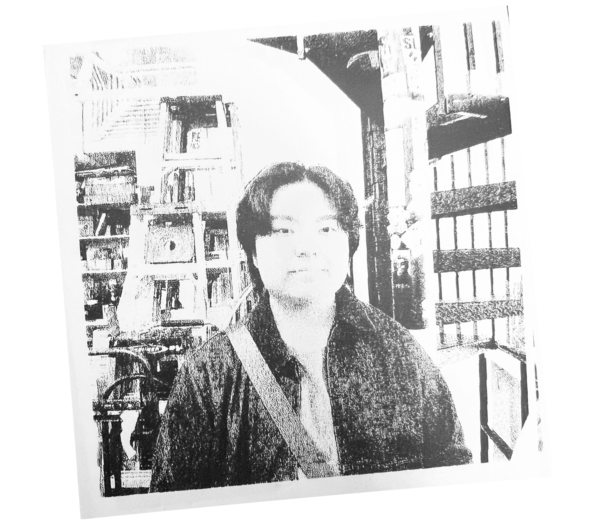

@ Printed Matter, Oct 2025
Elliot is a graphic designer
an artist
a cat lover
a radio DJ
pursuing his BFA in Design at Mason Gross School of the Arts, exploring the web, language, and play through publications and typography.
He is interested in archives, dualisms, websites, digital artifacts, cycles, and the everyday ☘︎.
When he's not designing, you can find him collecting CDs, going to the library, or making donburi.
He is interested in archives, dualisms, websites, digital artifacts, cycles, and the everyday ☘︎.
When he's not designing, you can find him collecting CDs, going to the library, or making donburi.
Open to freelance work,
resume & portfolio available upon request.
Let's chat! ˖𓂃.✧
You can reach me at
elliotcdong [at] gmail [dot] com
linkedin
instagram
resume & portfolio available upon request.
Let's chat! ˖𓂃.✧
You can reach me at
elliotcdong [at] gmail [dot] com

updated january 2026
coded with <3